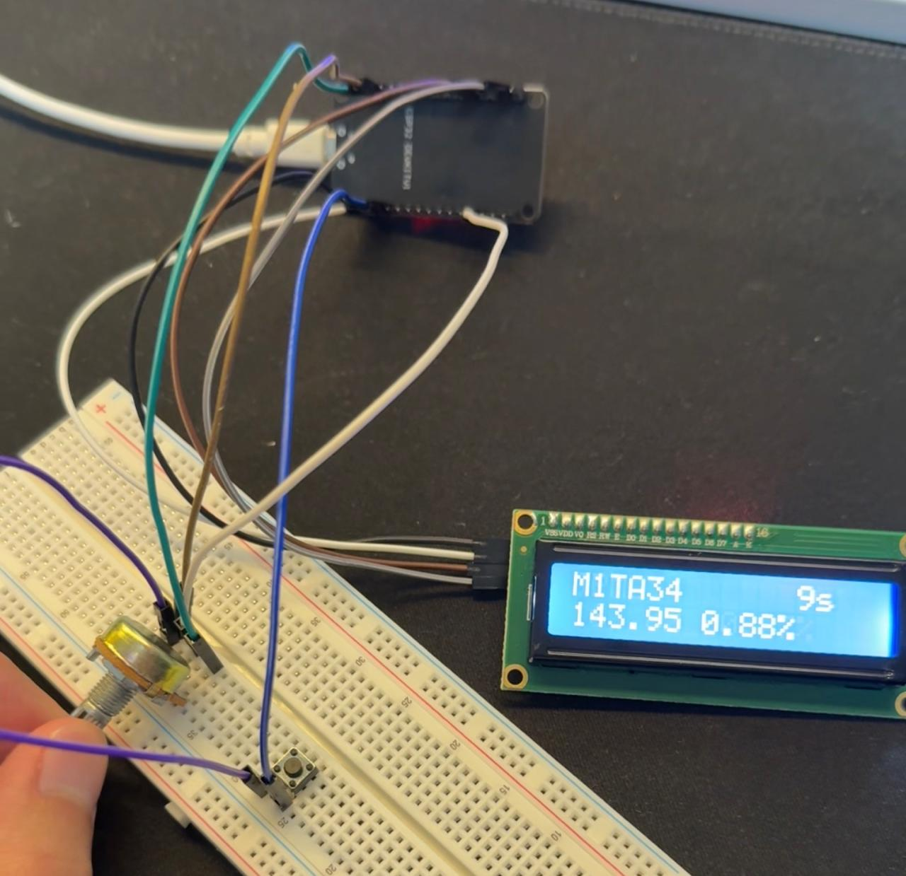

Stock Tracker
Using an ESP32 I was able to get up to date stock quotes on an LCD display while using a potentiometer to scroll through different quotes.
Project Overview and Technical Details
This project was designed to provide a highly accessible, low-power solution for real-time market monitoring. The core innovation lies in the use of the **ESP32 microcontroller** for reliable Wi-Fi connectivity and data fetching.
Key Components & Implementation
- **Microcontroller:** ESP32 for robust Wi-Fi and processing power.
- **Data Source:** Integration with a financial API (e.g., Alpha Vantage) using Python scripts for data ingestion.
- **User Interface:** A compact 16x2 or 20x4 LCD screen was used to display quotes concisely.
- **Interaction:** A **potentiometer** provided intuitive, physical scrolling through the monitored stock list, replacing complex button interfaces.
Skills Applied
Python (MicroPython)
Problem Solving
IoT / Embedded Systems
API Integration
Future Development
Future iterations could involve implementing email alerts for price thresholds or transitioning to an e-paper display for ultra-low power consumption.